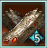
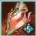
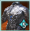
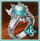
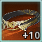
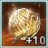
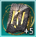

An in-depth, everything-you-need-to-know guide to Aion 2 PVE: gear, skills, every progression system, and the damage formulas behind them (Chapter 11). It's a solo work in progress, so let Kanon know on stream if you spot errors or anything out of date.
Offensive stat value
- Double Chance
- Front/Back Attack Damage Boost
- Weapon Damage Boost
- ≈ Critical Damage Boost
- Damage Boost
Flat: Attack > Max Attack > Attack Bonus > other Attack. Details
Lost when transferring gear
- Philosopher's Stone extra line
- Manastone / Soulstone lines
- Theostones
- Potential stat lines
Enhance level and normal Stat Lines carry over. Transfer
Early priorities
- Get 2 key Active Skills to Lv 20 (Rings + Arcana)
- Hoard Heroic Transfer Fragments
- Level Genus boards before locking lines
- Combat Speed is S-tier; ping matters
About the author (credentials & Skill Index)
Close to 1k hours played before Global launch, mostly off stream. Cleared all content including pinnacle raids and reached just under 900k Combat Power.
As a Brawler, averaged +20% to +90% Skill Index through every Combat Power bracket into the 800ks, peaking at 238/100 (+138%) in the 560k–580k bracket, in pick-up groups with no hand-picked DPS buffs, on KR servers with under 30 ping.
Skill Index compares your average DPS on a boss with everyone within 20 Combat Power of you. 100/100 (+0%) is the median.
Gear & Basics
Every gear tooltip stacks up to seven kinds of stats. Learn to read one and the rest of the guide clicks into place.
Finding where items come from
Select any item in-game and choose Source to see every place it can be obtained.
Anatomy of a gear piece
- 1
- 2
- 3
- 4
- 5
- 6
- 7
1 · Enhancement / Amp level
- Spend Kinah plus Enhance Stones (or Amplify Stones) to "+" your gear.
- Unique (yellow) gear goes to +15, then 5 more Amp levels (the blue diamonds).
- Heroic (orange) gear goes to +20, then 5 Amp levels.
- Amp levels unlock new orange stats, which depend on the gear type.
Full process: Ch 5 · Growth.
2 · Base stats
Static stats that never change.
3 · Amp stats
Gained by enhancing beyond +15 / +20. Values at max Amp (level 5):
| Gear | Amp 5 stats |
|---|---|
| Weapons | Attack 150 · Attack Increase 5% |
| Armor | Defense & HP 400 · Defense & HP Increase 5% Double-check |
| Accessories | Attack 100 · Defense 200 · Attack Increase 5% |
A Unique piece at +15 / Amp 5 transferred into a Heroic piece becomes +20 / Amp 0.
4 · Stat Lines (Soul Binding)
- RNG lines rolled from a pool specific to the gear slot (all helmets share one pool, all weapons another).
- Reroll one line at a time with Sync Stones.
- Reroll every line at once with orange Soul Codex: Reset ("Reset Books").
- Raise each line's value with Soul Codex books.
- Once Soul Binding Rate hits 100% (every line maxed in Enhancement → Soul Binding → Bind), a Philosopher's Stone unlocks one extra line.
5 · Manastone / Soulstone stats
- RNG lines added by consuming ("rolling") stones.
- Manastones are for weapons and armor; Soulstones are for accessories.
- Grades go Gray → Green → Blue → Yellow. Higher-grade stones give better odds of high-grade stats.
6 · Theostone
- Socketed into weapons; gives a % chance to proc on hit (e.g. 2% chance to deal 5k Water damage to one target).
- Lower-grade Theostones can be combined for a chance at a higher grade, like Closet skin combining.
- They make up a tiny share of total damage (under 1%).
More: Ch 5 · Theostones.
7 · Potential stats PVP only on Global
- Unlocked with Potential Stones, mainly from the Abyss and the Abyss Shop.
- Asia Weapons and accessories give PVP Damage Boost %; armor gives PVP Damage Tolerance %.
More: Ch 5 · Potential Enhance.
Pantheon stats & statues
Pantheon stats are bundled stats: each one grants two effects. You get them from three places:
| Pantheon stat | Daeva lord | Effects |
|---|---|---|
| Destruction | Zikel | Attack Increase · Perfect Resist |
| Death | Triniel | Critical Hit · Regeneration Penetration |
| Wisdom | Lumiel | Reduced MP Consumption · Double Chance |
| Destiny | Marchutan | MP · Endurance Chance |
| Space | Israphel | Move Speed · Block Chance |
| Justice | Nezekan | Defense · Perfect activation chance |
| Freedom | Vaizel | Accuracy · Evasion |
| Illusion | Kaisinel | Cooldown Reduction · Endurance Penetration |
| Life | Yustiel | HP · Regeneration Activation Chance |
| Time | Siel | Combat Speed · Double Chance Resist |
A Closer Look at Gear
What each slot is for, and what it gives you.


Weapon & Guard- Highest offensive base stats and Stat Lines. Weapon and Guard share the same Stat Lines.
- Gives +Active Skill levels as Stat Lines.
- Has Potential stats.
| Weapon type | Stat Lines | Max Amp |
|---|---|---|
| Dungeon weapon | 4 | 3 |
| Extendable (Khromede, Ludra) | 4 | 5 |
| Crafted | 5 | 1–5 |
"Dragon Lord" crafted weapon tiers
| Tier | Name | Max Amp | Amp 1 bonus |
|---|---|---|---|
| 1 | True Dragon | 1 | Attack 10 · Damage Boost 1% |
| 2 | Splendent True Dragon | 3 | Attack 12 · Damage Boost 2% |
| 3 | White Dragon | 5 | Not listed yet |
| 4 | Splendent White Dragon | 5 | — |
| 5 | Wise Dragon | 5 | — |
| 6 | Splendent Wise Dragon | 5 | — |

Armor- Helmet, Shoulders, Chest, Pants, Gloves, Cloak, Boots.
- Defensive base stats and Stat Lines; +Passive Skill lines only (no Active Skills).
- Amp stats at max: Defense & HP 400, Defense & HP Increase 5% Asia Global unconfirmed
- Has Potential stats.

Accessories- Necklace, Earrings, Rings, Brooch, Bracelet. Offensive and defensive base stats and Stat Lines, plus Potential stats.
- Amp stats at max: Attack 100, Defense 200, Attack Increase 5% Asia Global unconfirmed
| Slot | Stat Lines give | First source |
|---|---|---|
| Necklace | Basic stats + Passive Skills | |
| Earring | Basic stats + Passive Skills | |
| Ring | Basic stats + Active Skills | |
| Bracelet | Pantheon stats | 1st raid, Ludra |
| Brooch | Basic stats | 3rd raid, Muspel |


Belt & Amulet- Both come from the level 45 main story quest (MSQ) line.
- Enhanced with their own scrolls: Noble Belt Enhance Scrolls (from clearing Strongholds) and Fierce Battle Amulet Enhance Scrolls (from turning in feathers).
- After +10, Substance Morph them into a higher grade (Heroic is max).

Runes- Enhanced by smashing two together plus Clash Rune Enhance Scrolls. They break on failure, like Black Desert accessory enhancing.
- The only gear that can break when an upgrade fails.
- Most high-rank end-game players sit around +7 on both runes.
| Base stat | Start | Growth |
|---|---|---|
| Damage Tolerance | 0.5% | +0.5% / level |
| Damage Boost | 0.5% | +0.5% / level |
| Penetration | 100 | +50 / level |
| Combat Speed | 1% | +1% / level after +6 |
| Multi-hit Chance | 1% | +1% / level after +9? Unconfirmed |
Pendant
- From the level 50 MSQ line in the new Chapter 1 expansion region.
- Enhanced with Unique Amp Stones and Radiant Balaur's Essence. Goes to +20; cannot be Amped yet.
- Gets very expensive near max.
| Base stat | Start | Growth |
|---|---|---|
| HP | 300 | +10 / level |
| Attack Bonus | 10 | +5 / level |
| Defense Bonus | 1000 | +50 / level |
| Critical Hit | 10 | +10 / level |
| Critical Hit Resist | 10 | +10 / level |
| Perfect Chance | 0% | +0.5% / level after +8 |
| Double Chance | 0% | +0.5% / level after +13 |
Ideal Stat Lines
How to reroll Stat Lines
- Sync Stones reroll one line. Use the same grade as the gear. A lower-grade stone (e.g. Unique on Heroic gear) only has a 10% chance to reroll — never do this.
- Sync Stones come from Substance Morphing Sync Stone Fragments (mainly from dungeons) or any Unique gear piece.
- Reset Books (orange Soul Codex: Reset) reroll every line at once.
Rolling strategy
- Prioritize the rarest lines (lowest ≈% below). Fishing for these is painful, especially on Heroic gear.
- Once you have a best-in-slot (BIS) combo, use Transfer Stones to carry it to new gear.
- Avoid landing a rare line on the Philosopher's Stone slot: it won't carry over.
- Don't waste Heroic Transfer Stones. Unique → Unique is cheap; think hard before moving anything to Heroic (Ch 5 · Transfer).
Lists below are ordered by rarity (roll chance), not damage. Weapon Damage Boost hits harder than Damage Boost, but Damage Boost is rarer, so it's listed first. Exact % varies by piece; the relative order holds.
Target lines per slot Global
Weapon & Guard
- Damage Boost ≈2%
- Combat Speed ≈4%
- Weapon Damage Boost ≈4%
- Might ≈5%
- Multi-hit Chance ≈5%
- Precision ≈6%*
- Attack ≈6%
*May not be needed with Global's 50% crit cap; depends on Ludra caps.
Helmet
- Double Chance ≈1%
- Attack Increase ≈1%
- Attack ≈4%
- Passive skills for the rest
Cloak
- Double Chance ≈1%
- Attack Increase ≈1%
- Perfect Chance ≈1%
- Attack ≈4%
- Passive skills for the rest
Shoulder
- Double Chance ≈1%
- Critical Damage Boost ≈3%
- Attack ≈4%
- Passive skills for the rest
Chest
- Perfect Chance ≈1%
- Damage Boost ≈3%
- Attack ≈4%
- Passive skills for the rest
Pants
- Attack Increase ≈1%
- Perfect Chance ≈1%
- Damage Tolerance ≈3%
- Attack ≈4%
- Passive skills for the rest
Gloves
- Perfect Chance ≈1%
- Combat Speed ≈3%
- Attack ≈4%
- Passive skills for the rest
Shoes
- Perfect Chance ≈1%
- Movement Speed ≈3%
- Attack ≈4%
- Passive skills for the rest
Necklace
- Combat Speed ≈2%
- Might ≈2%
- Attack ≈8%
- Passive skills for the rest
- Accuracy ≈6% if needed
Earring
- Move Speed ≈2%
- Might ≈2%
- Precision ≈2%
- Attack ≈8%
- Passive skills for the rest
- Accuracy ≈6% if needed
Rings
- Might ≈2%
- Precision ≈2%
- Attack ≈8%
- Active skills for the rest
Brooch
- Might
- Precision
- Accuracy
- Constitution
- Critical or Block
Bracelet
- Illusion CD reduction · Endurance Pen
- Wisdom MP cost · Double Chance
- Destruction Attack · Perfect Resist
- Time Combat Speed · DC Resist
- Justice Defense · Perfect chance
- Space Move Speed · Block
Some classes swap a line, e.g. Assassin takes Death instead of Space.
Accuracy & Crit requirements
Bosses have defensive stats that counter Accuracy and Critical Hit. These are the values to reach so you don't miss and keep max crit. How these stats work.
Count every source that adds to them (e.g. PVE Accuracy, Block Penetration), so the number on your Stat Info → Main Stats page will read lower than these targets.
| Raid | Accuracy | Crit |
|---|---|---|
| Ludra Global, projected | 1200 | 1200–1400 |
| Corroded | 2350 | 2500 |
| Muspel (Normal) | ? | ? |
| Muspel (Hard) | 2800 | 3150 |
Numbers are approximate; the content is older and hard to retest. Send proven values to Kanon.
Skills
Three skill types: Active, Passive and Stigma. Active and Stigma skills unlock Specialty Perks at certain levels.
Active skills
- Level to 10 with Wisdom Stones (skill points) from leveling, turning in Feathers (world completion), and the Nightmare and Shugo Festival shops.
- Go higher with gear Stat Lines, Daevanion Boards and Arcana.
| Skill level | Unlocks |
|---|---|
| 8 | First 3 Specialty Perk options + 1 slot |
| 12 | 4th perk option + 2nd slot |
| 16 | 5th (final) perk option |
| 20 | 3rd slot |
- Every class has key Lv 20 skills the build depends on. Gladiator (Overhead Slam) and Templar (Judgment) get over 60% of their damage from a single skill.
- KR end-game builds run 2–5 skills at Lv 20. Global will likely have fewer Arcana cards, so lock in on your 2 most important skills early.
- To reach 20, get those skills on your Ring Stat Lines and your Arcana.
Passive skills
- Upgraded the same way as Active skills, but have no Specialty Perks.
- Once your main Actives are Lv 20, focus key passives. KR end-game players push some to Lv 25–30.
Stigma skills
- "Special" skills with longer cooldowns. You can equip up to 6 (possibly fewer on Global).
- 5 perks unlocked by level, and you get all perks you've unlocked.
- Leveled to 20 with Stigma Shards. After the Chapter 1 (Lv 50) update, levels 21–25 use golden Superior Stigma Shards.
- Stigma Shards come from combining Unstable Stigma Shards (PVE content) or from Abyss Points (Supply Requests, Daily Duties, Weekly Commands, farming players/mobs in the Abyss).
- Superior Shards come from leveling 45 → 50, plus 1 per Stigma skill you take to Lv 20. Fully maxed: 3 skills at 25, 1 at 23, the rest at 20.
- Key Stigmas give big buffs and boost key passives. Supports in particular can be gatekept by Stigma levels (e.g. Undefeated Mantra, Light of Protection).
Enhancement
Upgrading your gear: Growth, Manastones, Theostones, Soul Binding and Transfer.
A · Growth
- Standard Korean-MMO enhancing: spend Kinah and Enhance Stones (to +15/+20), then Amplify Stones.
- Enhance Stones come from lots of content. Amplify Stones come from Substance Morphing Amplify Fragments with Enhance Stones.
- Unique: +15 then 5 Amp levels. Heroic: +20 then 5 Amp levels.
- Success chance soft-resets to 60% going from +15 to +16, and rises 3% on each failure.
Potential Enhance PVP only on Global
Potential is PVP-only on Global, so you can skip this for PVE. On Asia servers it works like this:
- Adds PVE Damage Boost / Tolerance on an exclusive "Potential" line.
- Asia Crafted gear gets max Potential automatically, at nearly double Dungeon gear's value. Not the case on Global; whether crafted Potential is higher there is unconfirmed.
- Needs Potential Enhancement Material: Substance Morph spare gear into Potential Stones. The gear's Item Level sets the stone's tier (1★ → 5★, then a "prestiged" 1★).
B · Manastone / Soulstone lines
- Each stone you consume rerolls all sockets on the piece (5 in the example below).
- Roll Superiors on end-game gear only. Don't waste them on gear you'll replace soon.
- Aim for at least one yellow Damage Boost-type line. Blue gives 30, yellow gives 100. 100 = 1% on your stat sheet (e.g. yellow Weapon Damage Boost +100 = 1%).
- Two yellow Attack lines ≈ one yellow Damage Boost line. A single yellow Attack (10) is a decent placeholder if you're short on stones.
C · Theostones
- One per weapon; identical Theostones don't stack.
- % chance to proc on hit (CC or damage). More Combat Speed means more hits, so low-% stones get better. Ping affects this.
- Tiny share of DPS even at yellow grade. Many players just pick the best-looking one, since Theostones make your weapon glow.
D · Soul Binding
Simple once the names make sense. It has three parts, all acting on your Stat Lines: Bind, Sync and Reset.
Bind
- Raises each line's effectiveness (yellow bars). The blue Soul Binding Rate reaches 100% when every line does.
- Uses Soul Codex books. Each use costs more; the gain is guaranteed but its size is random.
- At 100%, spend 2 Philosopher's Stones (mainly from Conquest dungeons) to add an extra line.
Sync & Reset
Sync rerolls one Stat Line; Reset shuffles all of them. See Ch 3.
E · Transfer
Moves a piece's enhance level and Soul Binding onto another (ideally better) piece.
- Costs Transfer Stones, made by Substance Morphing Transfer Stone Fragments.
- Apart from a few shops (e.g. Season Shop), Heroic fragments only come from morphing Heroic gear: 1 Heroic piece = 5 fragments.
| Heroic Transfer Stone | Fragments | ≈ Heroic pieces |
|---|---|---|
| Accessory | 10 | 2 |
| Armor | 15 | 3 |
| Weapon | 20 | 4 |
- Same grade → same grade: 1 Transfer Stone of that grade.
- Unique → Heroic: also needs 5 extra Unique Transfer Stones.
- Unique stones are made the same way. The blue x1–x5 on a piece shows how many fragments it gives; higher Item Level gives more.
They're hard to come by, and you'll need a lot later. Hoard fragments early.
Kanon's advice: skip transferring into the first Heroic set (Ancient Spirit) and wait for the second (Faded Shadow) before going Heroic, unless the game changes. You can't upgrade a Unique Transfer Stone into a Heroic one, and transferring and rolling on Unique gear is nearly free by comparison.
Arcana
A card system that gives stats and skill levels. Think of cards as gear slots, with set bonuses on top. There are 10 card types and 7 sets.
Arcana cards
Each card gives a Pantheon stat and up to 4 lines from its own pool:
| Card | Pantheon stat | Line pool |
|---|---|---|
| Chalice | Yes | All Active & Passive skills |
| Parchment | Yes | Half of your Active skills |
| Compass | Yes | Other half of your Active skills |
| Bell | Yes | Half of your Passive skills |
| Mirror | Yes | Other half of your Passive skills |
| Scale | Yes | All Active & Passive skills |
| Key | — | Offensive stats |
| Hourglass | — | Defensive stats |
| Dice | — | Offensive stats |
| Lantern | — | Defensive stats |
Upgrading Arcana
- Transcendence dungeons drop Arcana cards and Training Arcana. Feed either into your equipped card to level it.
- Each level gives +1 to a random skill line on the card (or a small random stat bump if it has no skills). Max level is 5.
- You can feed your current card into a better one, but some EXP is lost (often still worth it). Feeding the same card type gives bonus EXP.
Crafting Arcana cards
- Use Transmute to craft a card and choose its lines (for most cards). 100% worth doing.
- Costs Crystals, which you Substance Morph from Crystal Shards. Different Transcendence dungeons drop different shards.
- Know which card your most valuable skills come from. Getting key Actives to Lv 20 comes first.
- A cheaper set that isn't perfect but gets your Actives to 20 is a fine stopgap while you farm for 4-line crafts.
- Chalice and Scale have the biggest pools, so they're hardest to roll perfectly. Other cards roll 4 from 6, so drops or "yolo" crafts often land. If 4-line crafting, craft Chalice first.
- Chalice and Scale are the most valuable (any skill). Scale costs double and won't be in at launch.
BIS set setups (all classes)
5-card setup (launch)
With only 2 sets, the Pantheon stats on the cards matter more than set bonuses. Try for 2 Primal Vigor cards for the 2-piece. Swapping Parchment and Compass between sets is fine.
| Set | Set effect | Cards (Pantheon stat) |
|---|---|---|
| Primal Vigor | 2pc: +60 PVE Attack when HP ≥ 70% | Chalice (Time) · Parchment (Life) |
| Magic Armor | 2pc: Restore 1,500 MP when MP ≤ 20% (30s CD) | Compass (Death) · Bell (Destruction) · Mirror (Wisdom) |
8-card setup
| Set | Set effects | Cards |
|---|---|---|
| Punishing Overture | 2pc: +5% Boss Damage Tolerance 4pc: +60 PVE Attack, +10% PVE Damage Boost at ≥ 70% HP | Chalice (Time) · Parchment (Life) · Key (Attack Bonus) · Hourglass (Defense Bonus) |
| Protected Soul | 2pc: +5% Restoration 4pc: +5% Weapon Damage Boost; 10k-damage shield for 5s at ≤ 30% HP (2 min CD) | Compass (Death) · Parchment (Life) · Bell (Destruction) · Mirror (Wisdom) · Scale (Destruction, Destiny) |
Daevanion Boards
Like Diablo 4's Paragon Board. 8 boards; each tile gives stats and/or skill levels. Respeccing is nearly free, so don't stress.
Tile types
Each board starts in the middle. Orange tiles sit on the corners and sides, farthest away.
| Tile | Gives |
|---|---|
| Gray | Basic stats |
| Green | Passive skills or double stats |
| Blue | Active skills or % stats |
| Orange | Significant stats |
The 4 white boards: Nezekan, Zikel, Vaizel, Triniel
These share one point pool: 100 points is 100 across all four. They can't be maxed out.
- Take key Active skills first, to help reach Lv 12, 16 and especially 20.
- Then take the important orange tiles. You'll have enough points for all Active and Passive skills.
- Most orange tiles are high value, but skip these for PVE: Multi-hit Resist (Triniel), Critical Damage Tolerance (Vaizel). Marchutan's Weapon Damage Tolerance is also worthless for PVE, but take it anyway since its crystals are infinitely farmable.
- Gray Attack Bonus tiles are worth it; grab them all eventually, even at the cost of the skippable orange tiles above.
The 4 colored boards
No skill levels, and each has its own separate points.
| Board | Role | Orange tiles | How to complete |
|---|---|---|---|
| Ariel | PVE | PVE Damage Boost / Tolerance | Farm Conquest & Transcendence |
| Azphel | PVP | Not needed for PVE | |
| Marchutan | General (mid-game) | Weapon Damage Boost / Tolerance (Tolerance worthless in PVE) | Farm dungeons, or convert Yustiel Crystals 1:1 |
| Yustiel | General (end-game) | Attack / Defense Increase | Farm Conquest & Transcendence |
Pet Genus
A horizontal system that gives a lot of power. Five boards: Cogni, Fera, Natura, Varian and Special (think boards 1–5).
How Genus works
- Each board has 9 slots ("lines"), each with its own stat pool.
- Leveling Insight (the blue bar, a.k.a. Genus level) opens more slots and allows higher-grade rolls.
- Analyze rerolls every open, unlocked slot. Lock a slot with the padlock; more locks make each roll pricier.
- Goal: Genus level 10 on every board, then fish for the best stat in each of the 45 slots. You get up to 3 presets.
Global BIS Genus lines Global
Steps
- Lock nothing; level every board to 9 with Analyze.
- At 9, open Auto Analyze, pick the BIS stat for slot 4, set it to Unique grade, and run it.
- Level the Special board first.
- Rainbow Crystals work on any board if you have plenty.
| Slot | Cogni | Fera | Natura | Varian | Special |
|---|---|---|---|---|---|
| 1, 5 | Max Attack > Attack Bonus | ||||
| 2, 8 | HP Increase % (usually skip: too costly in Crystals and Kinah) | ||||
| 3, 6, 9 | Power Shard Bonus (Crit or Accuracy first if you're under cap) | ||||
| 4 | Crit Damage Boost > Damage Boost, PVE Damage Boost | Weapon Damage Boost > Damage Boost, PVE Damage Boost | PVE Damage Boost > Multi-hit > Perfect Chance | Front/Back Damage Boost > PVE Damage Boost | Double Chance only; roll until you get it |
| 7 | Damage Tolerance, PVE Damage Tolerance > Endurance | Damage Tolerance, PVE Damage Tolerance > Endurance | PVE Damage Tolerance > Endurance | PVE Damage Tolerance > Endurance | Damage Tolerance > Endurance |
Asia (KR/TW) BIS Genus lines, for reference
Step 1
- Level boards to 10 and ignore stats; don't lock anything yet. Waiting for 10 gives the best odds of top-grade lines.
- Exceptions: Global progression is too slow to wait, or you roll a high yellow/orange BIS stat on slot 4.
Step 2
- At 10, Analyze with nothing locked until slot 4 is BIS on every board.
- Slot 4 priority: Special (Double Chance) and Varian (Front/Back Damage Boost), then Fera (Weapon Damage Boost) and Cogni (Critical Damage Boost).
- Some settle for lower rolls on preset 1 and chase better rolls on preset 2. A high yellow can beat a low orange.
- Tip: Auto Analysis targeting Unique (or Heroic) Double Chance on slots 3 and 9.
| Slots | All boards except Special | Special board |
|---|---|---|
| 1, 4, 7 | Boss Attack > Crit | Max Attack > Attack Bonus |
| 3, 9 | Double Chance (aim for 2% rolls on your end-game preset) | Double Chance |
| 2, 5, 8 | Max Attack > Attack Bonus | Max Attack > Attack Bonus |
| 6 | Damage Tolerance | Damage Tolerance |
Pet "Owned Effects"
- Passive stats for unlocking and leveling pets. Level them by farming mobs and from pet rewards in various content.
- Global Max level is 3, and at max you get a Pantheon stat. Focus Might and Precision first: every Cogni mob gives 1 Might, every Natura mob 1 Precision.
- Find mobs with Source. If none is shown, the mob is on the other faction's land.
Wings
How wings give stats
- Equip Effect: while you wear them.
- Owned Effect: just for owning them, always on.
- Enhance to +10 to grow the Owned Effect. Global Not available at launch.
- At +0, not every stat shows. +1 reveals a hidden line. Brawler Wings (Abyss Shop) reveal Weapon Damage Boost, which makes them high value.
- Only the top owned stat and the hidden last stat grow when enhancing.
Highest-value wings to upgrade
Alphabetical. Upgrade all of these eventually. Highlighted owned stats are the ones that grow; the other two don't. Some aren't in the game at launch.
Azure Flash
- Equip
- Damage Boost · Accuracy Bonus · Block · Endurance
- Owned
- Flight Power · Damage Boost · Block · Weapon Damage Boost
Awaken Pride
- Equip
- Max Attack · Back Attack Crit · Back Attack Damage Boost · Penetration
- Owned
- Flight Power · Attack Bonus · HP · Back Attack Damage Boost
Blue Wave
- Equip
- Evasion Bonus · Crit Resist · MP · Natural MP Regen
- Owned
- Flight Power Crit Resist · Crit Resist · Back Attack Crit Resist · PVE Damage Boost
Brawler
- Equip
- Defense Bonus · Status Effect Chance · Status Effect Resist · HP
- Owned
- Flight Power · Impact-type Chance · Damage Tolerance · Weapon Damage Boost
Dramata Nest
- Equip
- PVE Attack · PVE Defense · PVE Accuracy · PVE Damage Boost
- Owned
- Flight Power · Attack Bonus · Accuracy Bonus · Damage Boost
Eroded
- Equip
- Max Attack · Multi-hit Chance · HP · Front Attack Damage Boost
- Owned
- Flight Power · Front Attack · Natural HP Regen · Front Attack Damage Boost
BIS equip for front attackers.
Forest Spirit
- Equip
- Boss Attack · Defense Bonus · Damage Tolerance · Boss Damage Boost
- Owned
- Flight Power · Damage Tolerance · Boss Attack · PVE Damage Boost
Illusory Echo
- Equip
- Max Attack · Critical Hit · Penetration · Perfect Chance
- Owned
- Flight Power · Double Chance · Perfect Chance · Max Attack
Nightmare
- Equip
- Attack Bonus · Accuracy Bonus · Critical Hit · Boss Damage Boost
- Owned
- Flight Power · Boss Attack · Boss Defense · Double Chance
Salvation
- Equip
- Critical Hit · Penetration · Front Attack · Front Attack Damage Boost
- Owned
- Flight Power · Front Defense · PVE Defense · Front Attack Damage Boost
Talisra
- Equip
- Attack Bonus · Defense Bonus · Accuracy Bonus · Cooldown Reduction
- Owned
- Flight Power · Defense Bonus · Evasion Bonus · Attack Bonus
Ultimate Daeva
- Equip
- Defense Bonus · HP · MP · Penetration
- Owned
- Flight Power · Penetration · Accuracy Bonus · Attack Bonus
Most-equipped wings by class
KR as of 8/21/2026, from aion2tool.com/statistics/jobstats.
Awaken Pride had just released and was expected to overtake Talisra for Assassins.
Why is everyone running Eroded?
Front/Back Attack Damage Boost is a newer stat in its own multiplicative damage bucket, so it's very strong. Even ranged classes use it despite having less access than melee positional classes.
Why not Sorcerer and Spiritmaster?
Their kits have abilities that don't benefit from Front/Back Attack Boost.
Closet (Transmog)
Skin collection bonuses
- Another horizontal, very long-term system: unlocking skins gives stats.
- Each skin type raises a matching % stat. Weapon skins raise Attack Increase % for your weapon.
Example: if your fists give 500 Attack and your closet gives +6.7% Fist Attack Increase, that 6.7% applies to the 500.
Closet attack counts as Pure Attack.
How Stats Work
The damage formula and what every stat is really worth. Many of these formulas were first made public in this guide, with credit to Korean YouTuber Aion Research Lab ("AionLab"), who has parsed Rank 1 logs on Templar and Assassin. AionLab on YouTube.
How diminishing returns work
Double Chance gives a chance to deal 2× damage. Each extra 1% is worth a bit less than the last, because it's measured against a bigger average.
| Double Chance change | Avg damage (per 100 hits) | DPS gain |
|---|---|---|
| 0% → 1% | 100 → 101 | +1% |
| 0% → 2% | 100 → 102 | +2% |
| 0% → 50% | 100 → 150 | +50% |
| 1% → 2% | 101 → 102 | +0.99% |
| 62% → 63% | 162 → 163 | +0.617% |
Worked example: 80% Double Chance on your sheet, plus +12% from support buffs, minus the boss's 30% Double Chance Resistance, gives 62% final. Out of 100 hits, 62 deal 2 damage and 38 deal 1, for 162 total. One more percent gives 163: +0.617% DPS.
End-game (KR) damage efficiency
Damage gained per point, on an ideal KR build at the start of Season 1 (Lv 50, Lava Heart armor), with support buffs. Global will differ: fewer stats means less diminishing return. Front/Back Damage Boost starts at 0% while Crit Damage starts at 50%, so early points favor Front/Back.
Solid bar = low end of the range; faded extension = high end.
1% Damage Boost ≈ 0.35%
- Based on 180% total Damage Boost (end-game totals pass 200%), after -50% boss resistance. Classes with more Damage Boost can see 0.3%.
- Weaker than Weapon, Front/Back and Crit boosts because it's additive with other Damage Boost sources.
1% Weapon Damage Boost ≈ 0.5–0.55%
- Its own damage bucket, and scales with Pure Attack.
1% Critical Damage Boost ≈ 0.4–0.6%
- Base value starts at 50%. Big variance from class passives. Factors -25% boss crit resistance.
- Classes with Crit Damage buffs sit around 120% total (≈0.4%); those without around 90% (≈0.6%).
- ≈0.4–0.45%: Gladiator (Murderous Burst), Chanter (Wind's Promise), Ranger (Hunter's Resolve, Bow of Blessing), Assassin (Assault Stance, Illusive Clone), Cleric (Earth's Grace).
- Guaranteed-crit classes can reach 0.6%; no crit buff and no guaranteed crit is around 0.5%.
1% Perfect ≈ 0.1%
- Procs your weapon's max damage roll.
- Also has a hidden ≈5% damage effect on Pure Attack (strange, but proven in testing).
1% Double Chance ≈ 0.6–0.65%
- Doubles damage (like Heavy Attack in Throne & Liberty). The highest-value offensive stat right now.
- Every boss from Dying Dramata onward has 30% Double Chance Resistance.
- Value per 1%: ≈0.8% at 50% DC, ≈0.65% at 70%, ≈0.60% at 80%.
1% Front/Back Attack Damage Boost ≈ 0.57–0.65%
- Added in the Lv 50 Chapter 1 update; boosts damage from a positional angle.
- Starts at 0% in its own multiplicative bucket, so it's very strong.
- Assumes 75% positional uptime. Even non-positional classes stack it; likely to be adjusted before Global.
10 Attack ≈ 0.17% · 10 Max Attack ≈ 0.1325% · 10 Attack Bonus ≈ 0.1%
- Attack is Pure Attack, so it's multiplied directly by Weapon Damage Boost. Two yellow Attack Manastone lines ≈ 1% Damage Boost.
- Max Attack raises the top of your weapon's range and its average: with 641–709, +20 Max Attack makes 641–729 and the average goes from 675 to 685. Factors in Perfect proc rate. Second-best per point after Attack.
- Attack Bonus is added after Pure Attack × Weapon Damage Boost, then multiplied by Attack Increase %. Weaker than Max Attack per point, but still top tier because it sits inside Attack Increase.
Stat value TL;DR
Your in-game "Attack" stat doesn't include Weapon Damage Boost. Test it by removing Weapon Damage Boost from your Marchutan board: Attack won't change.
Max Attack vs Attack Bonus breakdown: AionLab's video (1:16 shows the formula holds; Max Attack = 최대공격력, Attack Bonus = 추가공격력).
Multi-hit
- A % chance for 1–4 extra hits, each worth 5% of the damage.
- At 36–40% Multi-hit (KR end-game range), each 1% ≈ 0.33% more damage.
Power Shards
Equipped consumables that add damage. Slight diminishing returns from the PVE Attack bucket.
| Shard | Tooltip | Real damage gain |
|---|---|---|
| Power Shard | +5% | +4.65% |
| Superior Power Shard | +10% | +8.9% |
Accuracy & Block/Parry · Crit & Crit Resist
- Accuracy cancels Block/Parry 1:1. Cover the target's full Block and every hit lands.
- Diminishing returns: 100 Accuracy ≈ 6–7%. Against 2,000 Block with 1,000 Accuracy, the target parries 60–70% of the time.
- Parry caps at 80%, reached at a 1,200 gap (6.66% × 1,200 ≈ 80%).
- Crit vs Crit Resist uses the same curve and 80% cap.
- Skill passives add on top: 70% Crit + a 30% passive = 80%. If you already hit 80% on a skill, skip crit Specialty Perks.
Targets: Ch 3 · Accuracy & Crit requirements.
Defense & Penetration
- Penetration subtracts from Defense. Defense then reduces damage by 10% of its value in PVE, 1% in PVP.
- So Penetration is a very low-value stat.
Example: 500 damage, 100 Penetration, target has 200 Defense → 100 Defense left → 10% of 100 = 10 → 490 damage (499 in PVP).
Damage Tolerance & Endurance
- Both are strong defensive stats.
- Damage Tolerance directly counters the matching Damage Boost. In PVE only Damage Tolerance, Boss Damage Tolerance and PVE Damage Tolerance matter.
- Bosses have no Front/Back Damage Boost, Weapon Damage Boost, Critical Hit or Multi-hit, so resistances to those are worthless in PVE.
- Endurance is your % chance to take half damage. Only Endurance Penetration counters it, and bosses have none.
The damage formula
The 0.1 Defense multiplier is 0.01 in PVP. Everything is confirmed except the placement of Multi-hit, which may sit outside Attack Increase.
This is the most detailed public formula to date: not a secret, just very hard to work out. A baseline for theorycrafters.
What is "Pure Attack"?
Not an official stat. It's a label for the Attack that gets multiplied directly by Weapon Damage Boost. To check: remove your weapon's Attack and your Weapon Damage Boost and watch Stat Info → Main Stats; the "Attack" there never includes Weapon Damage Boost.
Counts as Pure Attack
- Weapon Attack
- Guard Attack
- Accessory Attack
- Attack Stat Lines
- Manastone / Soulstone Attack
- Closet (Ch 10)
Flat Attack tiers
Everything else is added after Attack Increase, so it's worth less.
| Tier | Stats | Why |
|---|---|---|
| 1 | Attack · Max Attack · Attack Bonus | Pure Attack, or inside Attack Increase |
| 2 | PVE Attack · Boss Attack | Added after Attack Increase |
| 3 | Front/Back Attack · Species Attack · Critical Attack | Conditional; only added when the condition is met (Species = specific mob type) |
Class Builds
Builds & loadouts
Notmeter, the main site for tracking DPS and parses, now shows builds and loadouts for every class: